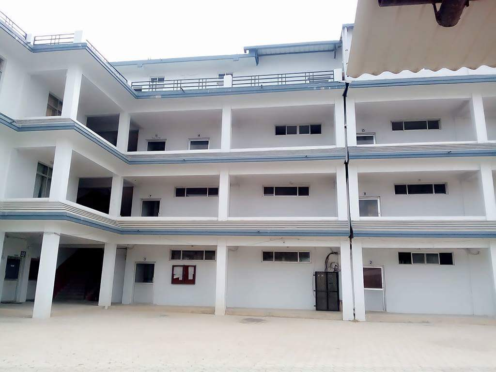

|
About Nepalgunj Technical Collage

Nepalgunj Technical Collage is affiliated to Council for Technical Education and Vocational Training.The collage imparts education in four strems ,Diploma in Civil Engineering ,Diploma in Computer Engineering PCL in General Medicine (H.A) and Certificate in Medical laboratory(CMLT).It hs been sadfly conceived with a goal and foregrounding the Technical Education of Nepal to keep pace with the fast changing pattern and cope with the global challenges on needs of the presnt day.
it’s team compries highly experiencedd,qualified and leading academic professional and astute managers with enormous exposure and recognition in the field of technical education.they are capable enough to give the students best education in the field of study.
here every one is genuinely open ,friendly and helpful making students academic pursuit more enjyoyable and goal orientd.the life of students here is fulfilled academically vibrant but creative and blossoming.
We belive that good education is interlinked with discipiline and systematic formation.
{kind=link}